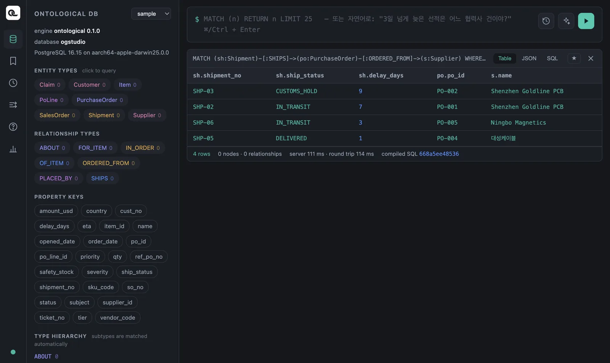

Ontological Portal을 열고, 그래프 질의 언어 Cypher의 기본 문장 MATCH·WHERE·RETURN·ORDER BY·LIMIT를 예제 데이터로 하나씩 실행해 봅니다.
Cypher는 그림으로 쓰는 질의#
Cypher는 그래프의 구조를 그림을 그리듯 표현하는 질의 언어입니다. Neo4j에서 시작해 지금은 ISO 표준 그래프 질의 언어(GQL)의 바탕이 되었습니다.
| 그림 | Cypher | 뜻 |
|---|---|---|
| ○ | (s:Supplier) |
Supplier 라벨을 가진 노드 하나, 이름은 s |
| ○→○ | (po)-[:ORDERED_FROM]->(s) |
po에서 s로 가는 ORDERED_FROM 관계 |
| 속성 | s.name |
노드 s의 name 값 |
SQL의 SELECT … FROM … WHERE와 비교하면 이해하기 쉽습니다.
| SQL | Cypher |
|---|---|
FROM supplier s |
MATCH (s:Supplier) |
WHERE s.country = 'China' |
WHERE s.country = 'China' |
SELECT s.name |
RETURN s.name |
ORDER BY … LIMIT 3 |
ORDER BY … LIMIT 3 |
JOIN … ON … |
관계 패턴 -[:REL]-> (8장) |
포털 열기#
홈의 「Ontological Portal」 카드를 누릅니다. 왼쪽 위의 그래프 선택에서 sample을 고르세요. 4부의 모든 예제는 sample 그래프에서 실행합니다.

| 영역 | 내용 |
|---|---|
| 왼쪽 ENTITY TYPES | 노드 라벨. 누르면 그 라벨을 조회하는 질의가 입력됩니다. |
| 왼쪽 RELATIONSHIP TYPES / PROPERTY KEYS | 관계 이름과 속성 이름. 질의를 쓸 때 참고합니다. |
| 위 입력칸 | Cypher를 쓰고 ⌘Enter(Windows는 Ctrl+Enter) 또는 ▶ 버튼으로 실행합니다. (n:을 치면 라벨, n.을 치면 속성을 자동완성합니다. |
| 결과 카드 | Table·JSON·SQL 보기, 노드를 반환하면 Graph 보기도 생깁니다. ★로 저장, ✕로 닫기. |
첫 질의#
MATCH (s:Supplier)
RETURN s.supplier_id, s.name, s.country, s.tier
| s.supplier_id | s.name | s.country | s.tier |
|---|---|---|---|
| S-KR-01 | 한빛정밀 | Korea | 1 |
| S-KR-02 | 대성케이블 | Korea | 2 |
| S-CN-01 | Shenzhen Goldline PCB | China | 1 |
| S-CN-02 | Ningbo Magnetics | China | 2 |
| S-VN-01 | Hanoi Assembly | Vietnam | 2 |
MATCH는 “이런 모양을 찾아라”, RETURN은 “찾은 것 중 이것을 돌려 달라”입니다. 노드 전체를 조회하려면 RETURN s라고 씁니다. 그러면 모든 속성이 담긴 객체가 반환되고, 결과 카드에 Graph 보기가 생깁니다.
거르기 — WHERE#
MATCH (s:Supplier)
WHERE s.country = 'China' AND s.tier = 1
RETURN s.name
결과는 Shenzhen Goldline PCB 한 곳입니다. WHERE에서 쓸 수 있는 것들:
| 쓰임 | 예 |
|---|---|
| 비교 | = <> < <= > >= — po.amount_usd >= 30000 AND po.amount_usd < 70000 |
| 논리 | AND OR NOT — NOT s.country = 'Korea' |
| 목록에 포함 | sh.ship_status IN ['IN_TRANSIT', 'CUSTOMS_HOLD'] |
| 문자열 | s.name STARTS WITH 'S', CONTAINS 'Gold', ENDS WITH 'PCB' |
| 값 없음 | po IS NULL, po IS NOT NULL |
조건이 하나뿐이면 패턴 안에 속성과 값을 직접 적어도 됩니다.
MATCH (s:Supplier {supplier_id: 'S-CN-01'})
RETURN s
날짜 비교
날짜 컬럼(opened_date, eta 등)은 '2026-08-29' 같은 문자열과 바로 비교할 수 있습니다. 엔진이 원천 타입(date)으로 바꿔 줍니다. date() 함수는 아직 없습니다.
cypher
MATCH (c:Claim) WHERE c.opened_date >= '2026-08-29'
RETURN c.ticket_no, c.opened_date
정렬과 자르기 — ORDER BY · SKIP · LIMIT#
금액이 큰 발주 세 건:
MATCH (po:PurchaseOrder)
RETURN po.po_id, po.amount_usd, po.status
ORDER BY po.amount_usd DESC
LIMIT 3
| po.po_id | po.amount_usd | po.status |
|---|---|---|
| PO-001 | 82000 | OPEN |
| PO-005 | 60000 | OPEN |
| PO-002 | 41000 | OPEN |
ORDER BY a, b DESC처럼 여러 기준을 줄 수 있고, SKIP 2 LIMIT 3은 “두 개 건너뛰고 세 개” — 페이지를 나눌 때 사용합니다. RETURN po.po_id AS 발주처럼 AS로 컬럼 이름을 바꿀 수 있습니다(한글도 됩니다).
중복 없애기와 세기#
MATCH (s:Supplier) RETURN DISTINCT s.country
MATCH (s:Supplier) RETURN count(s) AS suppliers
첫 질의는 Vietnam·Korea·China 세 행, 둘째는 5입니다.
값 바꿔 보여 주기 — 함수와 CASE#
MATCH (sh:Shipment)
RETURN sh.shipment_no,
CASE WHEN sh.delay_days > 3 THEN '지연'
WHEN sh.delay_days > 0 THEN '주의'
ELSE '정상' END AS 상태
ORDER BY sh.shipment_no
| sh.shipment_no | 상태 |
|---|---|
| SHP-01 | 정상 |
| SHP-02 | 지연 |
| SHP-03 | 지연 |
| SHP-04 | 정상 |
| SHP-05 | 주의 |
| SHP-06 | 주의 |
| SHP-07 | 정상 |
| SHP-08 | 정상 |
Ontological DB가 지원하는 함수는 다음과 같습니다. 목록에 없는 함수를 쓰면 엔진이 이 목록을 알려 주는 오류를 냅니다.
| 분류 | 함수 |
|---|---|
| 집계 | count sum avg min max collect |
| 문자열 | toUpper toLower trim substring replace split toString |
| 숫자 | abs ceil floor round sqrt rand toInteger toFloat |
| 그래프 | id elementId labels type length size keys exists |
| 기타 | coalesce timestamp datetime vector.similarity vector.distance genai.vector.encode |
결과를 보는 세 가지 방법#
결과 카드 오른쪽 위에서 고릅니다.
- Table — 결과를 테이블로 보여 줍니다. 가장 자주 사용하는 보기입니다.
- JSON — 노드 객체를 그대로 보여 줍니다. 앱 코드에서 받는 형식과 같습니다(19장).
- SQL — Cypher를 변환한 PostgreSQL SQL입니다. Ontological DB가 질의를 어떻게 실행하는지 확인할 수 있습니다(9장).
확인 문제
sample 그래프에서 다음을 Cypher로 써 보세요.
- 상태가
OPEN인 발주의 번호와 금액을 금액이 작은 순으로 조회하세요. - 세관 보류(
CUSTOMS_HOLD)이거나 운송 중(IN_TRANSIT)인 선적의 번호와 도착 예정일(eta). - 고객이 몇 곳인지 확인하세요.
- 클레임 중 심각도(
severity)가HIGH인 것의 번호와 제목.
정답 보기
MATCH (po:PurchaseOrder) WHERE po.status = 'OPEN'
RETURN po.po_id, po.amount_usd ORDER BY po.amount_usd
PO-007(12000), PO-008(27000), PO-006(33000), PO-002(41000), PO-005(60000), PO-001(82000) — 모두 6건입니다.
MATCH (sh:Shipment) WHERE sh.ship_status IN ['IN_TRANSIT', 'CUSTOMS_HOLD']
RETURN sh.shipment_no, sh.eta
SHP-02, SHP-03, SHP-06 세 건.
MATCH (cu:Customer) RETURN count(cu) AS customers
3곳.
MATCH (c:Claim) WHERE c.severity = 'HIGH' RETURN c.ticket_no, c.subject
T-1 「컨트롤러 전원 불량」, T-3 「PCB 납땜 불량」.